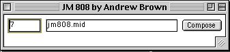

|
|||||||
This class creates stochastic drum patterns.
Simple. It uses two classes, the jm808.java file does the composing and
contains the main() method, and the jm808_GUI.java class draws the visual
interface. Which looks like this:

The number 7 indicates the number of loops (bars) the pattern should
play.
The string is the file name. The compose button generates a new MIDI file
of the specified name.
In this way several MIDI files can be created without having to reboot
the program.
A final MIDI file can sound like this:
Click here to view jm808 source.
Click here to view jm808_GUI source.
Lets have a closer look at the jm808 class.
import jm.JMC; |
The import statements tell the class which additional classes or packages of classes this program needs. In this case all the imported classes are from the jMusic library. The JMC class contains the jMusic constants such as C4 for middle C. The jm.music.data package has the Note, Phrase, Score and so on. The jm.music.tools package has the classes that manipulate the jMusic data, in particular it contain the Mod class. Finally, the jm.util package is used to read, and write MIDI files, and contains various notational displaying classes as well as classes to play back midi and audio.
public final class Jm808 implements JMC{
|
In this code segment the Jm808 class is declared as are a number of class
variables.
Those are ones that are available (visible and usable) throughout the
entire class. The length is the number of semiquavers long one bar will
be. The usual jMusic data objects, from Score to Phrase are declared.
Note that to operate on General MIDI equipment drums have be allocated
to MIDI channel 10. Because programming languages count from zero, jMusic
channel 9 is the tenth channel.
The main() method simply creates an instance of this class, the Jm808 class, by calling the constructor.
/* constructor */ |
The constructor first makes an instance of the graphical user interface
(GUI) class that does the pretty stuff for this program.
In essence all the constructor does is start other processes. The
Jm808_GUIclass in turn call the other methods of this class.
This might all seem a little convoluted - and it is a bit - but it keeps
the composition code separate from the visual display code, so that if
there is a problem it is easier to locate.
public void createScore(String fileName, int loopNum) { |
This createScore() method does all the musical work in this program.
It could easily run without the GUI if required.
Briefly, the process is to randomly generate kick drum, snare drum and
hihat parts.
The method takes arguments from the GUI class, first the name to call
the resulting MIDI file and the number of bars long the drum pattern should
be.
Here's the process:
First the parts are emptied of data (this is only really necessary the second and subsequent times the method is run by pressing the 'compose' button on the GUI).
All three phrases (kick, snare, hihats) are filled with semiquaver notes. The endPattern() method is called to create a crash cymbal at the end (we'll see this in detail later). At this stage the drum pattern would sound really tiresome - 16ths everywhere!
To make it more interesting the next section goes through each phrase and randomly turns some notes into rests. This provides gaps in the music and gives it rhythmic interest. There is a different probability for each instrument so that we end up with fewer kick drums than snare drums hits and even more hihats.
We now have one bar of drum pattern, so we repeat each phrase a specified (in the GUI) number of times.
After this, the process is quite 'normal' to jMusic folk. All phrases are added to a part which is added to a score, which is written out to a MIDI file.
private static Phrase phraseFill(int length, int pitch) {
|
In the previous section we mentioned that each phrase gets filled with semiquaver notes, well because this happens three times (once for kick, snare, and hats) we avoid repetition by creating a separate method which is called three times. This phraseFill() method takes two arguments, the number of semiquavers to fill (the length) and the pitch of the drum on the General MIDI drum map (the pitch).
Notice that the notes are created with a random dynamic value, this assists in providing additional musical interest to the drum pattern and helps it sound somewhat less mechanical.
private static CPhrase EndPattern() { |
The last method in this class is the one that creates the crash cymbal on the down beat after the last repeat of the pattern. This provides some musical conclusion to the patterns - trivial but perhaps better than listening to many unresolved beats :)
OK. Now lets look at the graphical front end to the program. The Jm808_GUI class.
import java.awt.*; |
The import statements are used as described previously. However, different classes are required. The java.awt and java.awt.event packages are the built-in Java graphical interfaces classes. The letters 'awt' stand for Abstract Windowing Toolbox and these classes are used to draw windows, menus, buttons and so on. More recent versions of Java have added the javax.swing package that does even more fancy interfaces.
public class Jm808_GUI extends Frame implements ActionListener, JMC{ |
Jm808_GUI is declared. There are some awt-releated aspects to this declaration. The class 'extends' the Frame class. That means it takes on all the attributes of the Frame class which basically allows it to become a window on the screen. It also 'implements' the ActionListener interface (along with the JMC that we're used to in jMusic classes). This means that the class can deal with user actions such as clicking an on screen button.
Some class variables are declared. textFields are awt components that create spaces for the user to type text, such as the MIDI file name. it also creates an object of type Jm808 called drumMachine. This allows it to have a reference to the Jm808 class and enable it to use the methods of that class, such as createScore().
public Jm808_GUI(Jm808 drumMachine) { |
The constructor sets up the visual appearance of the frame and then displays it. Because this class is an extension of the Frame class, the Frame class its the 'super' class. The first line within the constructor asks the Frame class to run its constructor to create a window with the name provided in quotes.
The Jm808 class variable is made to reference the calling class which is passed through the variable 'drumMachine'.
An awt Panel is created, and two text fields and a button are created and added to the panel.
The button registers itself with the ActionListener using the method AddActionListener() - see a good book on Java for a fuller discussion about awt event handling.
The panel - p - is added to 'this' (the Frame), and it is packed (made to fit all its bits snugly) and then made visible on screen with the show() method.
public void actionPerformed(ActionEvent ae){
|
Dealing with the user clicking on the 'compose' button is all that's left to do. The ActionListener interface, declared as part of the class, uses this actionPerformed() method whenever an object that is registered to it (such as the compose button) is actioned by the user.
We first check to see if it was the compose button (which has an action command "Create". Then we get the file name and number of loops that the user typed in the text fields. With these we call the createScore() method in Jm808 that generates a new drum pattern and saves it as a MIDI file. Simple :) This MIDI ile is saved in the same folder/directory that the class is running from, unless otherwised specified, so go have a listen!